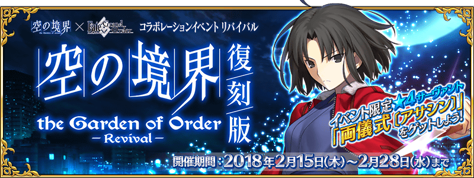
在被確認為特異點F的島國出現微小波動。
那裡曾發生召喚Servant，不讓離去的奇妙現象。
靈子轉移後邂逅到擁有「直死之魔眼」的少女。
借助少女之力挺身調查的Master們究竟能否發現真相呢…？
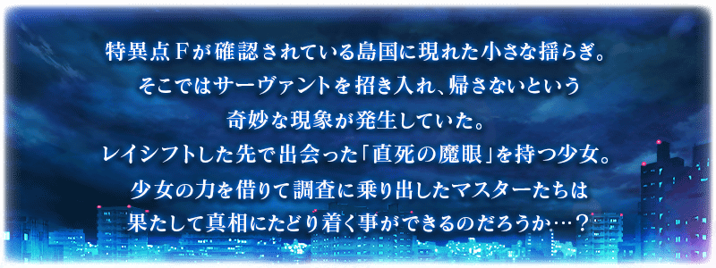
◆活動舉辦期間◆
2018年2月15日(四) 17:00～2月28日(三) 11:59
◆活動概要◆
舉辦「Fate/Grand Order」合作活動復甦「復刻版:空的境界/the Garden of Order -Revival-」！
來自奈須きのこ原作「空之境界 the Garden of sinners」的女主角「兩儀式」做為活動限定Servant「★4(SR)兩儀式〔Assassin〕」在「Fate/Grand Order」的世界登場！
與期間限定加入的兩儀式合作，解開出現在特異點F附近的波動之謎吧！
原作者親自執筆！獻上大質量的劇本，敬請期待只有合作才有的故事！
※本活動為在2016年舉辦的合作活動「空之境界/the Garden of Order」的「復刻版活動」。
◆活動參加條件◆
只限通過「特異點F 炎上汙染都市 冬木」的才能參加
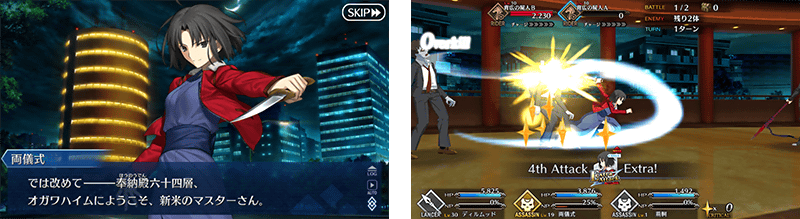
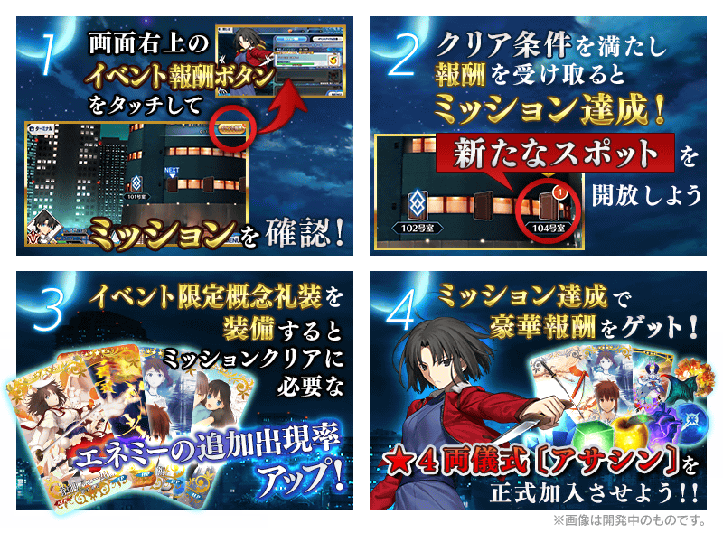
在「復刻版:空之境界/the Garden of Order -Revival-」，會發生「收集特定的道具一定數以上」「擊倒特定的敵人」等各式各樣條件的任務，達成的話可獲得豪華報酬獲得！
另外，對應任務的達成狀況會開放新的關卡和任務。
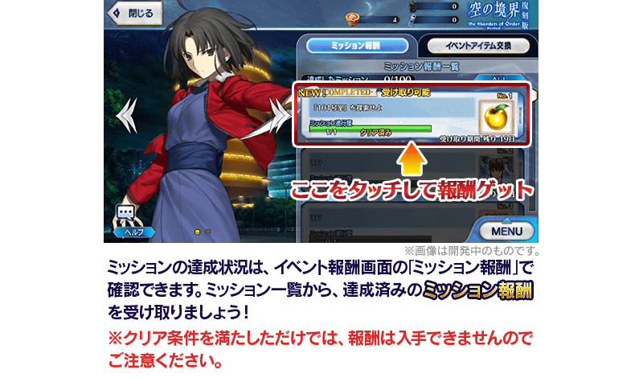
※請注意未領取任務報酬的話，不會出現新的任務和地點。
◆超值攻略方法・其1◆
裝備於聖晶石召喚Pick Up中的期間限定概念禮裝「老成の翁」「冠位人形師」「歪曲の魔眼」「拳舞は鮮やかに」「スプリンター」「リピート･マジック」的話，會提升在合作活動復甦「復刻版:空之境界/the Garden of Order -Revival-」中活動専用道具「黑貓公仔」「草莓冰淇淋」「礦泉水」的掉落獲得數。
※請注意於各關卡的道具掉落率並非100％。
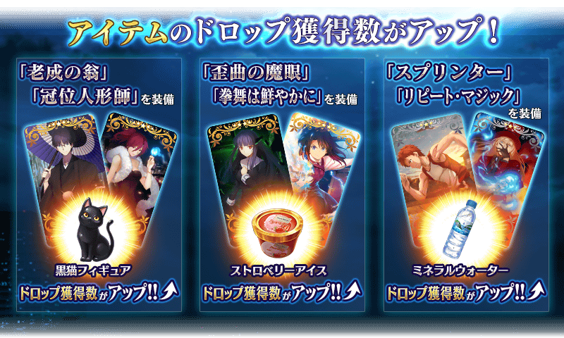
◆超值攻略方法・其2◆
裝備可在活動道具交換入手的活動限定概念禮裝「首切りバニー2016」「三重結界」「夏の未来視」「リフレイン」的話，會提升做為任務通過條件對象的敵人追加出現率。
※請注意於各關卡的敵人追加出現率的顯示就算是100％以上，效果也只到100％。
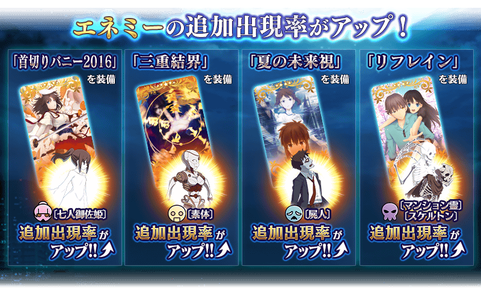
| 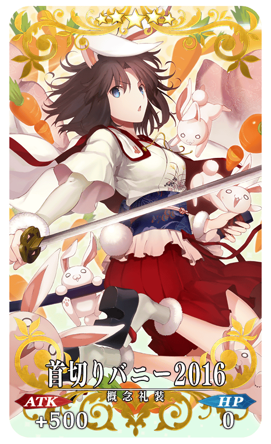 |
★★★★★SSR |
| 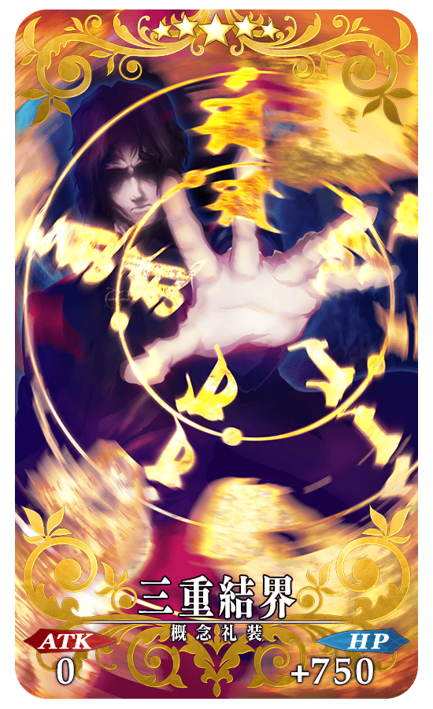 |
★★★★★SSR |
| 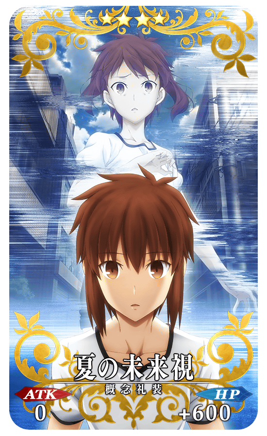 |
★★★★SR |
| 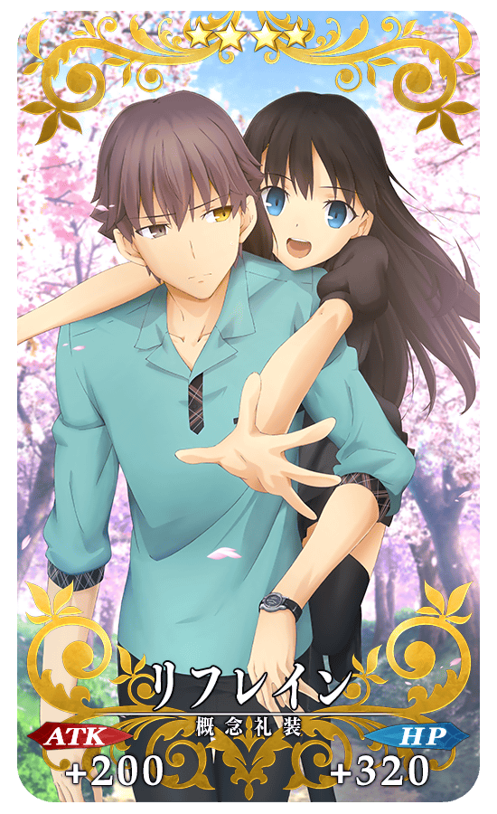 |
★★★★SR |
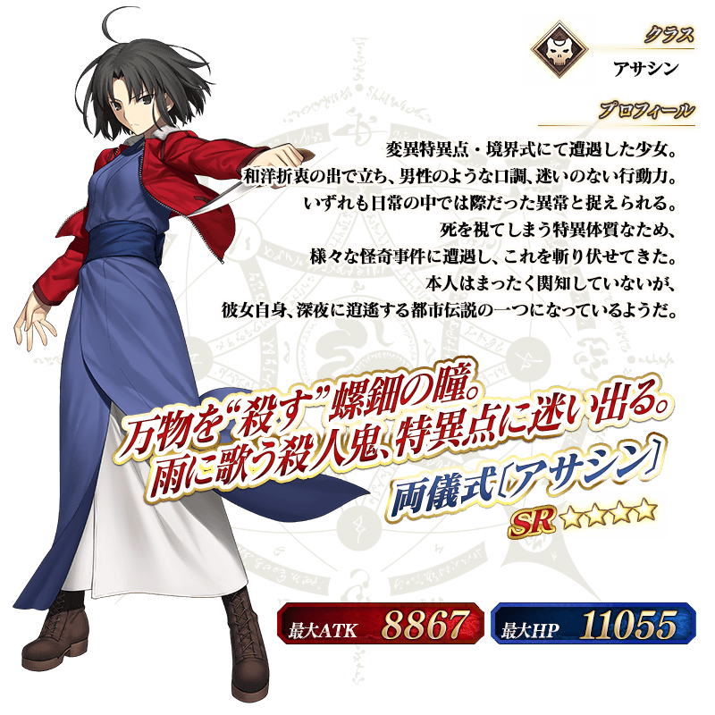
◆靈基再臨◆
使用活動期間中的任務報酬以外無法入手的「業物小刀」，重複4次靈基再臨的話，卡面會有所變化！
※兩儀式〔Assassin〕不會隨靈基再臨使戰鬥角色的外觀變化。
◆得到活動限定概念禮裝用經驗值卡「九字兼定」吧！◆
做為活動期間限定關卡的通過報酬，可大幅度強化概念禮裝的EXP卡登場！ |
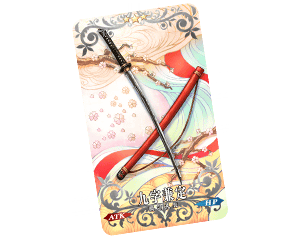 |
介紹兩儀式〔Assassin〕的寶具演出！ 在「Fate/Grand Order」官方網站內的公告中，公開了「★4(SR)兩儀式〔Assassin〕」的寶具演出。敬請確認。
◆交換方法◆
交換期限:2018年2月15日(四) 17:00～3月7日(三) 11:59
※交換期間結束後「黑貓公仔」「草莓冰淇淋」「礦泉水」會消失。
活動専用道具可自點擊管理室(ターミナル)畫面右上「活動報酬」的「活動道具交換」畫面，交換以下的道具。
※英靈結晶・流星之芙芙ALL★4(HP)會在通過合作活動復甦「復刻版:空之境界/the Garden of Order -Revival-」的主線關卡後開放。
◆能用黑貓公仔交換的道具◆
| 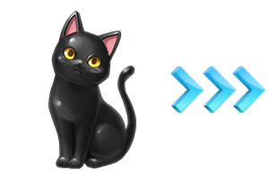 |
【活動限定概念禮裝】 【技能強化＆靈基再臨素材】 【技能強化素材】 【其他道具】 |
◆能用草莓冰淇淋交換的道具◆
|
【活動限定概念禮裝】 【技能強化＆靈基再臨素材】 【技能強化素材】 【其他道具】 |
◆能用礦泉水交換的道具◆
【活動限定概念禮裝】 【技能強化＆靈基再臨素材】 【技能強化素材】 【其他道具】 |
以通過「復刻版:空之境界/the Garden of Order -Revival-」的地點「屋頂(屋上)」及「終局特異點」的Master為對象開放高難易度的「挑戰關卡」。
専用的NPC Servant會在「挑戰關卡」會做為Guest登場。
請注意本次無法使用好友的支援Servant。
「挑戰關卡」就算在通過後也不會消失，能無數次挑戰，可以變更Servant和概念禮裝的組合後再次挑戰。
※關卡通過報酬、戰利品、Master經驗值、魔術禮裝經驗值、絆點數只限在初次通過時獲得。
◆挑戰關卡開放時間◆
2018年2月22日(四) 17:00
◆挑戰關卡參加條件◆
只限通過「復刻版:空之境界/the Garden of Order -Revival-」的地點「屋頂」及「終局特異點」的Master才能參加
◆挑戰關卡初次通過報酬◆
傳承結晶 1個

在Fate/Grand Order官方網站內首頁及Gallery，公開了合作活動復甦「復刻版:空之境界/the Garden of Order -Revival-」的電視廣告。
敬請確認。

◆「復刻 空之境界合作Pick Up召喚(每日交替)」期間◆
期間:2018年2月15日(四) 17:00～3月1日(四) 11:59
舉辦期間限定「復刻 空之境界合作Pick Up召喚(每日交替)」！
「★5(SSR)兩儀式(Saber)」與做為初登場Servant「★4(SR)淺上藤乃」以期間限定登場！
變更在2016年舉辦的「空之境界合作Pick Up召喚」一部份内容進行復刻。
本次包含上述，Pick Up7位的Servant！
「★4(SR)淺上藤乃」「★4(SR)阿爾托莉亞・潘德拉剛〔Alter〕(Lancer)」「★4(SR)伊莉莎白・巴托里(Lancer)」以每日交替Pick Up，「★5(SSR)兩儀式(Saber)」「★3(R)布狄卡」「★3(R)梅菲斯托費勒斯」「★3(R)亨利・傑基爾＆海德」常駐Pick Up！
詳情請在聖晶石召喚畫面左下的召喚詳細確認。
※兩儀式(Saber)、淺上藤は在Pick Up期間結束後不會追加到故事召喚。
※請注意「復刻 空之境界合作Pick Up召喚(每日交替)」為每日交替，會有「★4(SR)浅上藤乃」就算是Pick Up期間中也不會被抽出的日子。
※阿爾托莉亞・潘德拉剛〔Alter〕(Lancer)、伊莉莎白・巴托里(Lancer)、布狄卡、梅菲斯托費勒斯、亨利・傑基爾＆海德在Pick Up期間結束後也會在故事召喚被抽出。
※Pick Up期間中，阿爾托莉亞・潘德拉剛〔Alter〕(Lancer)就算通過第四特異點前也能入手。
裝備期間限定概念禮裝「★5(SSR)老成の翁」「★5(SSR)冠位人形師」「★4(SR)歪曲の魔眼」「★4(SR)拳舞は鮮やかに」「★3(R)スプリンター」「★3(R)リピート・マジック」的話，會提升合作活動復甦「復刻版:空之境界/the Garden of Order -Revival-」中活動専用道具的掉落獲得數。
※「★3(R)スプリンター」「★3(R)リピート・マジック」在Pick Up期間中，也能在友情點數召喚獲得。
Pick Up期間中，期間限定Servant、Pick Up Servant、期間限定概念禮裝的出現機率提升！
10次召喚中確定1張★4(SR)以上和確定1位★3(R)以上的Servant！
※確定★4(SR)以上包含Servant和概念禮裝。
※所謂「出現機率提升」意指比同稀有度的Servant及概念禮裝出現機率更高的設定。
| 每日交替Pick Up期間 | 每日交替Pick Up內容 |
|---|---|
| 2月15日(四) 17:00～ 2月18日(日) 22:59 |
兩儀式(Saber) 淺上藤乃 |
| 2月18日(日) 23:00～2月19日(一) 22:59 | 兩儀式(Saber) 淺上藤乃 阿爾托莉亞・潘德拉剛〔Alter〕(Lancer) 伊莉莎白・巴托里(Lancer) |
| 2月19日(一) 23:00～2月20日(二) 22:59 | 兩儀式(Saber) 伊莉莎白・巴托里(Lancer) |
| 2月20日(二) 23:00～2月21日(三) 22:59 | 兩儀式(Saber) 阿爾托莉亞・潘德拉剛〔Alter〕(Lancer) |
| 2月21日(三) 23:00～ 2月23日(五) 22:59 |
兩儀式(Saber) 淺上藤乃 |
| 2月23日(五) 23:00～2月24日(六) 22:59 | 兩儀式(Saber) 淺上藤乃 阿爾托莉亞・潘德拉剛〔Alter〕(Lancer) 伊莉莎白・巴托里(Lancer) |
| 2月24日(六) 23:00～2月25日(日) 22:59 | 兩儀式(Saber) 伊莉莎白・巴托里(Lancer) |
| 2月25日(日) 23:00～2月26日(一) 22:59 | 兩儀式(Saber) 阿爾托莉亞・潘德拉剛〔Alter〕(Lancer) |
| 2月26日(一) 23:00～ 3月1日(四) 11:59 |
兩儀式(Saber) 淺上藤乃 |
※請注意會以每日交替變更Pick Up的Servant。
翻新兩儀式(Saber)的戰鬥動作及寶具演出！
◆翻新時間◆
2018年2月15日(四) 17:00～
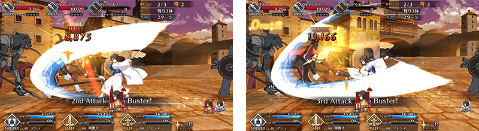
※2月15日(四) 15:00圖片修正
介紹翻新後的兩儀式(Saber)的寶具演出！ 「Fate/Grand Order」官方網站內的公告中，公開了「★5(SSR)兩儀式(Saber)」的寶具演出。敬請確認。
以期間限定舉辦淺上藤乃的體驗關卡！
迎接「★4(SR)淺上藤乃」做為支援成員，挑戰期間限定的關卡！
別錯過體驗Servant技能與寶具的機會！
※請注意淺上藤乃體驗關卡並無冒險部份。
◆淺上藤乃體驗關卡舉辦期間◆
2018年2月15日(四) 17:00～2月28日(三) 11:59
◆開放條件◆
通過合作活動復甦「復刻版:空之境界/the Garden of Order -Revival-」的「復刻版:空之境界「遭遇(エンカウント)」」的Master對象
◆關卡通過報酬◆
呼符 1張
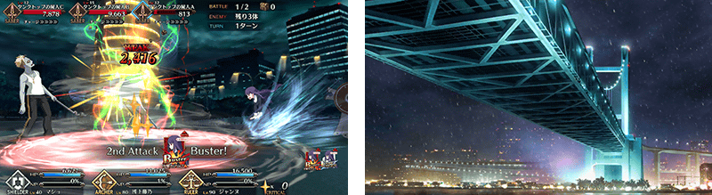
介紹期間限定Servant淺上藤乃的寶具演出！
在「Fate/Grand Order」官方網站內的公告中，公開了「★4(SR)浅上藤乃」的寶具演出。敬請確認。
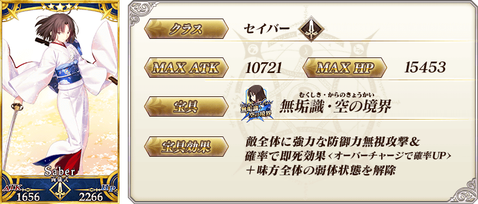
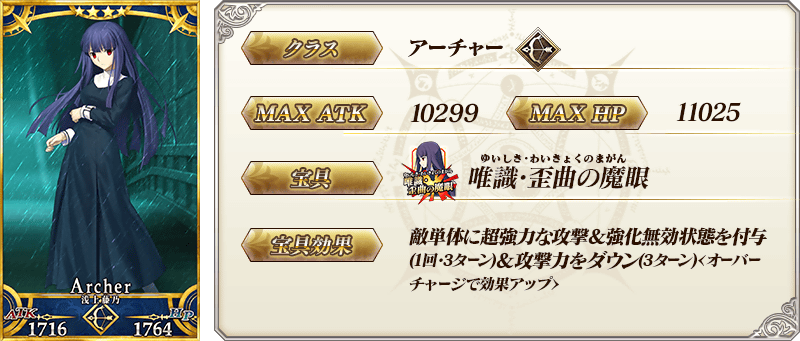
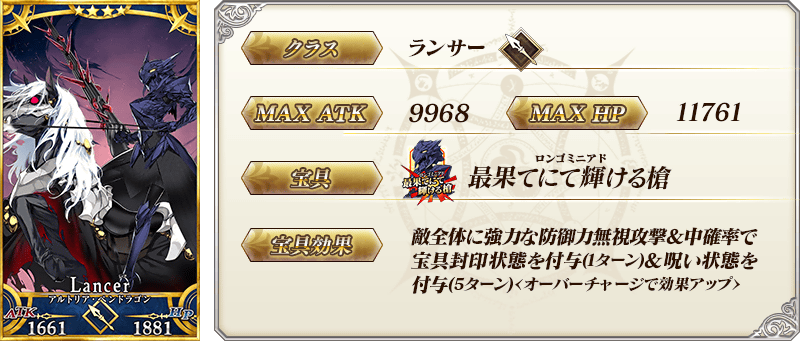
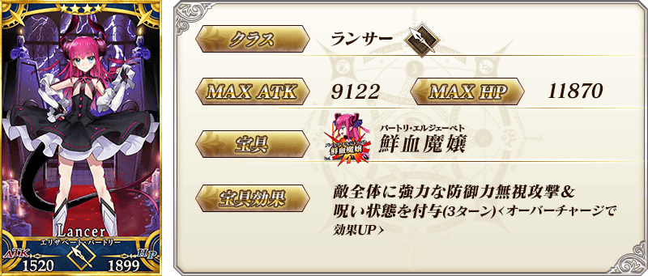
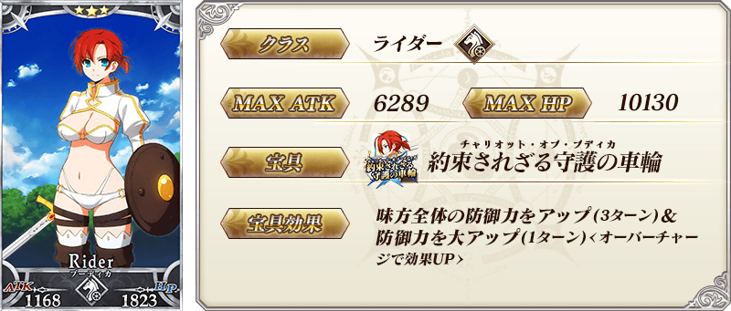
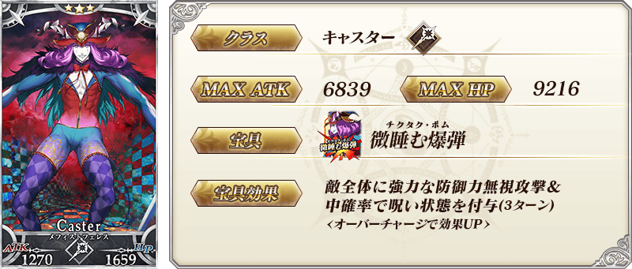
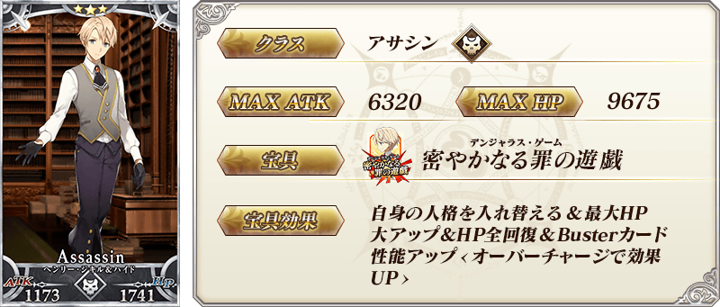
| 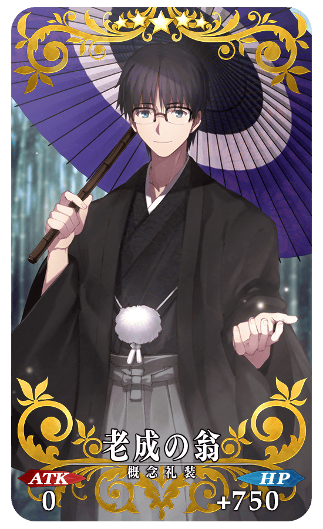 |
★★★★★SSR |
| 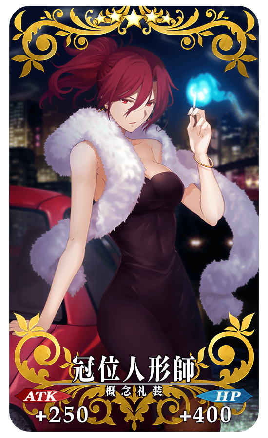 |
★★★★★SSR |
| 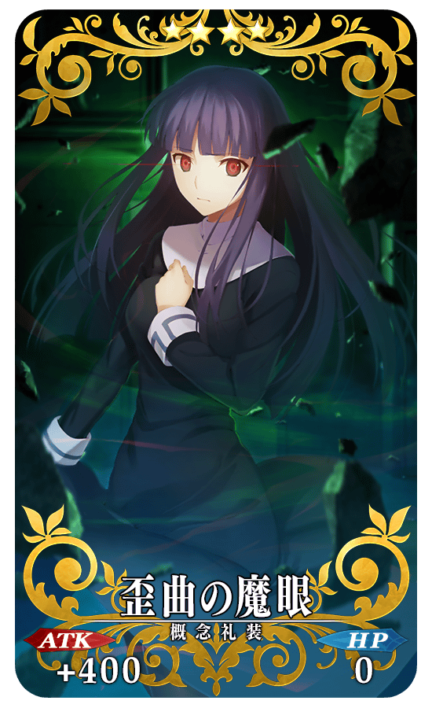 |
★★★★SR |
| 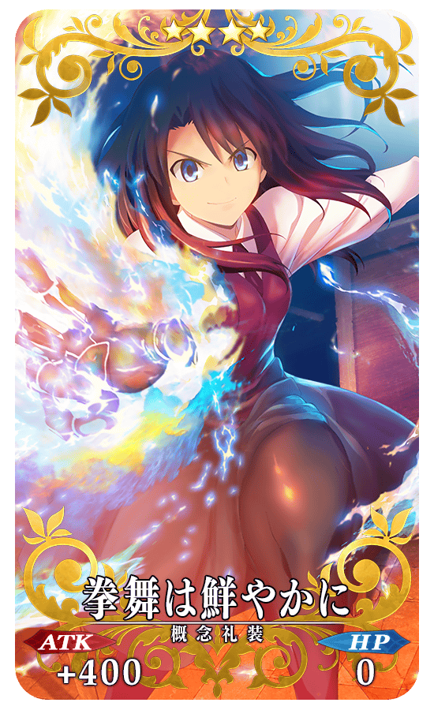 |
★★★★SR |
| 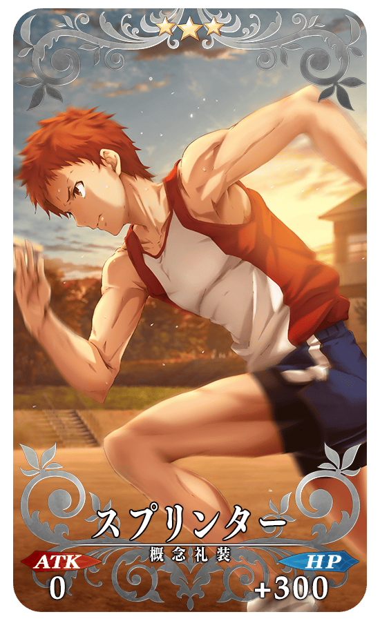 |
★★★R |

| 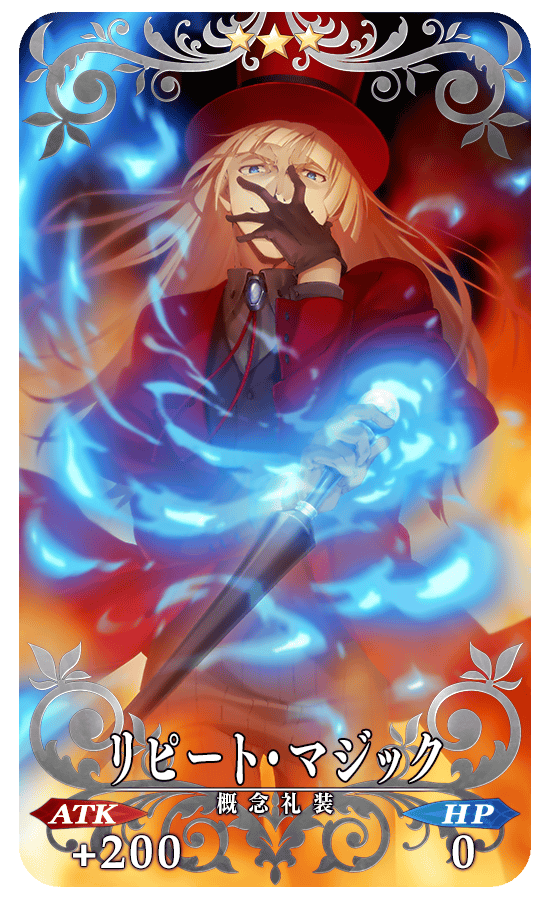 |
★★★R |
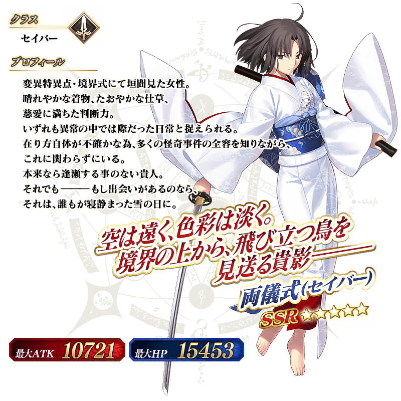